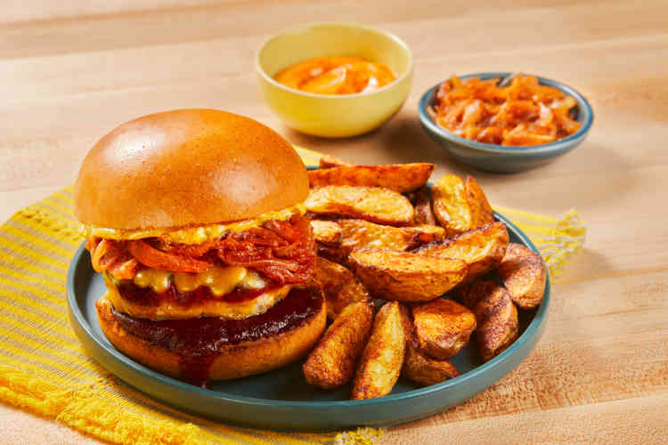

Home
BBQ Cheddar Pork Burgers

Description
These bodacious burgers are positively layered with flavor. Fry-spiced and onion-studded pork burgers are topped
with melty cheddar and a tangle of BBQ-spiked onion, then tucked into toasty buns. A slick of chipotle aioli holds
it all together, giving you the perfect, flavor-packed bite. With a heap of crispy oven fries on the side, we hope
you're prepared for total taste bud takeover.
Ingredients
- 1 Yellow Onion
- 12 oz Yukon Gold Potatoes
- 2 tbsp Mayonnaise
- 1 tsp Chipotle Powder
- 4 tbsp BBQ Sauce
- 1 tbsp Fry Seasoning
- 10 oz Ground Pork
- 1/2 cup Cheddar Cheese
- 2 Potato Buns
- 1 tbsp Cooking Oil
- 1 tbsp Butter
Steps
-
- Adjust rack to top position and preheat oven to 425 degrees. Wash and dry produce.
-
Halve, peel, and thinly slice onion; mince a few slices until you have 2 TBSP. Cut potatoes into
1/2-inch-thick wedges. Halve buns.
-
In a small bowl, combine mayonnaise with chipotle powder to taste (start with a pinch, then taste and add
more from there if desired). Season with salt and pepper; set aside.
-
-
Melt 1 TBSP butter in a large pan over medium heat. Add sliced onion and season with salt. Cook, stirring
occasionally, until softened and lightly browned, 10-15 minutes. TIP: Lower heat and add a splash of water
if onion begins to brown too quickly.
-
Stir in half the BBQ sauce (you'll use the rest later); cook until sauce is warmed through, 1-2 minutes
more.
- Turn off heat; transfer to a medium bowl. Wash out pan.
-
-
While onion cooks, toss potatoes on a baking sheet with a large drizzle of oil, half the Fry Seasoning
(you'll use the rest later), salt, and pepper.
- Roast on top rack until browned and tender, 20-25 minutes.
-
-
While potatoes roast, in a large bowl, combine pork, minced onion, remaining Fry Seasoning, salt, and
pepper.
- Form into two patties, each slightly wider than a burger bun.
-
-
Heat a drizzle of oil in pan used for onion over medium-high heat. Add patties and cook until browned and
cooked through, 4-7 minutes per side.
- In the last 1-2 minutes of cooking, top each patty with cheddar; cover pan until cheese melts.
- While patties cook, toast buns until golden.
-
-
Spread bottom buns with remaining BBQ sauce. Spread top buns with chipotle aioli. Fill buns with patties and
caramelized onion.
- Divide burgers between plates and serve with potato wedges on the side.